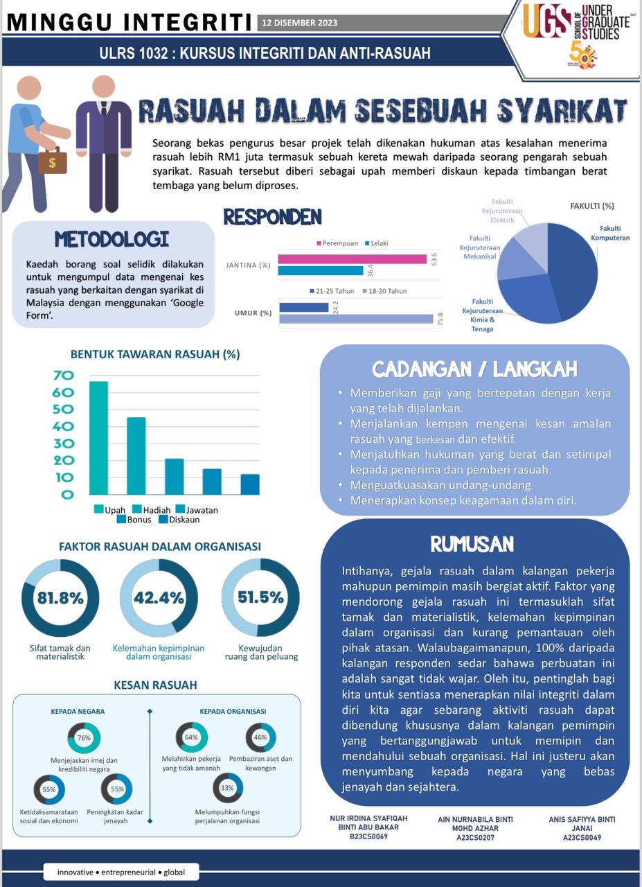

Let's see what I have done for this semester in DISCRETE STRUCTURE & NILAI DAN JATI DIRI

DISCRETE STRUCTURE
Embarking on the exploration of discrete structures within the realm of computer science and mathematics has been an intellectually invigorating experience, prompting profound self-reflection. Delving into topics such as set theory, logic, and graph theory has not only expanded my theoretical understanding but has also challenged the way I approach problem-solving in a structured and rigorous manner. Learning about propositions, predicate logic, and proofs has fostered a meticulous mindset, urging me to scrutinize and articulate logical arguments with precision. The abstraction inherent in discrete structures has sharpened my analytical skills and cultivated a deeper appreciation for the theoretical underpinnings of computer science. This journey has underscored the interconnectedness of discrete mathematics with various aspects of computing, laying a solid foundation for algorithmic thinking and computational problem-solving. The reflective process has been integral in recognizing my evolving capacity to grasp abstract concepts and has instilled in me a sense of discipline in approaching mathematical reasoning and formal logic within the domain of discrete structures.
NILAI DAN JATI DIRI
Exploring my values and identity has been a reflective journey that has shaped the core of my existence. As I've navigated through life experiences, personal beliefs, and cultural influences, I've come to understand the intrinsic connection between my values and the construction of my identity. Unraveling the layers of what truly matters to me has not only clarified my moral compass but has also illuminated the guiding principles that govern my decisions and actions. The process has required introspection, challenging societal norms, and discerning between values inherited and those consciously chosen. Recognizing the evolution of my identity in relation to shifting perspectives and life events has been both enlightening and empowering. Embracing authenticity in aligning my values with my actions has become a pivotal aspect of my selfhood, fostering a sense of integrity and purpose. This ongoing self-reflection has not only deepened my understanding of who I am but has also instilled a commitment to continuous growth and alignment with values that resonate at the core of my being.